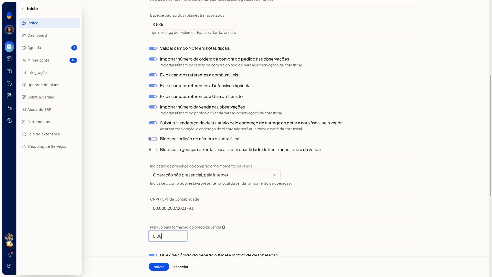

Número e série da nota fiscal
Importante
- Nesta tela não há controle de número da primeira nota nem de série.
- Nenhum campo desta tela é obrigatório.
Instruções
-
Acesse Configurações > Configurações ERP > Notas Fiscais.

-
Abra Configuração da nota fiscal eletrônica (NFe).
-
Em Configurações adicionais, clique em exibir. O link passa a ocultar e os campos complementares ficam visíveis.
-
Ajuste Bloquear edição do número da nota fiscal. A opção não é obrigatória.

-
Clique em Salvar para gravar o parâmetro.
Informações adicionais
Não há item separado de número e série
Em Notas Fiscais, não há um item só de número e série. Configurações gerais de notas fiscais é título de seção, não um link.